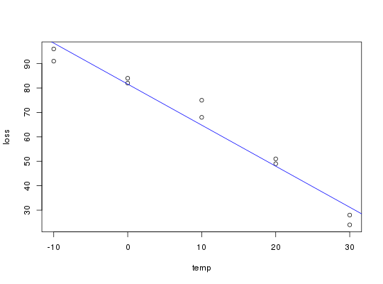

Data for Exercise 9.50
Insulate
A data frame/tibble with 10 observations on the following 2 variables.
outside temperature (in degrees centigrade)
heat loss (in BTUs)
Kitchens, L. J. (2003) Basic Statistics and Data Analysis. Duxbury
plot(loss ~ temp, data = Insulate)model <- lm(loss ~ temp, data = Insulate) abline(model, col = "blue")summary(model)#> #> Call: #> lm(formula = loss ~ temp, data = Insulate) #> #> Residuals: #> Min 1Q Median 3Q Max #> -7.40 -3.00 0.70 2.85 10.20 #> #> Coefficients: #> Estimate Std. Error t value Pr(>|t|) #> (Intercept) 81.6000 2.1772 37.48 2.82e-10 *** #> temp -1.6800 0.1257 -13.37 9.39e-07 *** #> --- #> Signif. codes: 0 ‘***’ 0.001 ‘**’ 0.01 ‘*’ 0.05 ‘.’ 0.1 ‘ ’ 1 #> #> Residual standard error: 5.621 on 8 degrees of freedom #> Multiple R-squared: 0.9571, Adjusted R-squared: 0.9518 #> F-statistic: 178.6 on 1 and 8 DF, p-value: 9.394e-07 #>not_run({ ggplot2::ggplot(data = Insulate, aes(x = temp, y = loss)) + geom_point() + geom_smooth(method = "lm", se = FALSE) + theme_bw() })